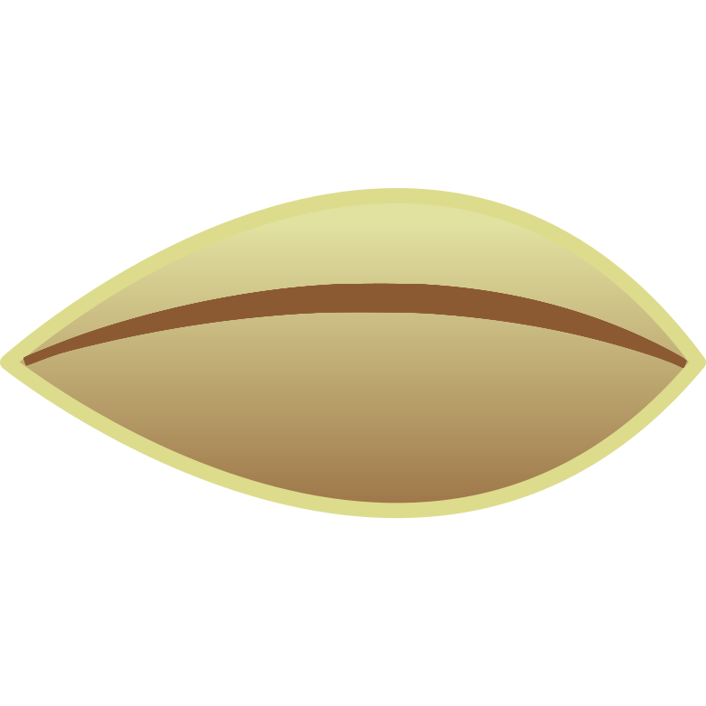
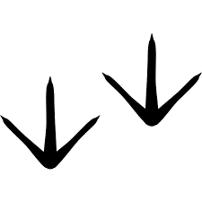
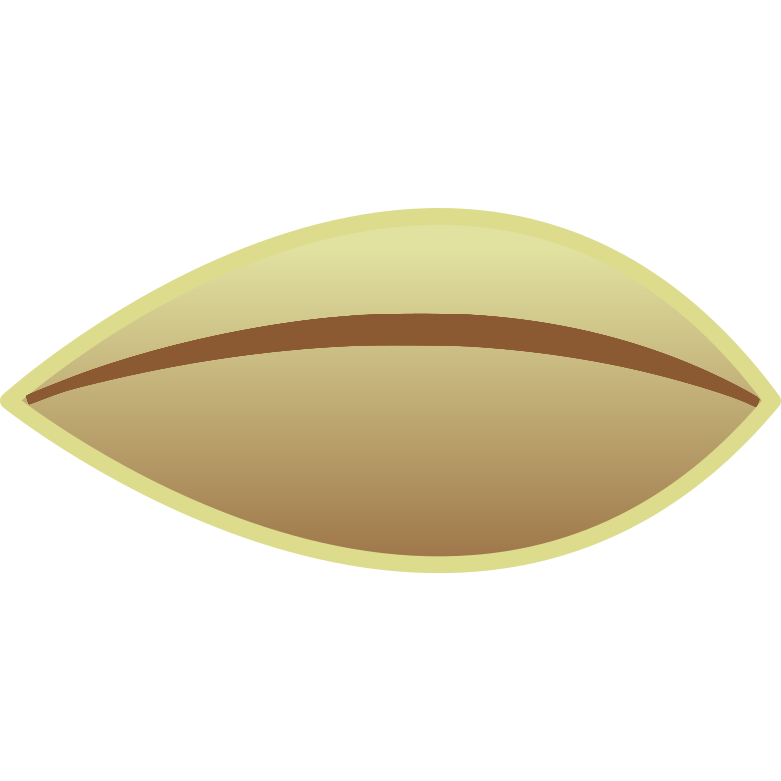
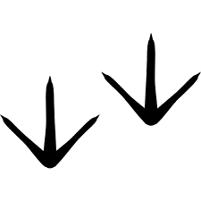

Marljiva gosenica je na izbranem drevesu že začela zbirati zalogo hrane in sanjariti o dnevu, ko bo postala metulj.
Njene sanje pa nenadoma zmoti čivkanje na bližnji veji. Ojoj, Eva si je za skrivališče izbrala drevo na kateremu gnezdijo ptice. Eva se mora hitro odpraviti na drugo lokacijo, drugače bo kaj kmalu postala tudi sama obrok lačnega kosa.
Pomagaj Evi poiskati novo skrivališče, na poti mora tako kot na prejšnji poti zaužiti čim več hrane. Vendar pozor, tokrat se mora Eva izogibati ptic. Sestavi program tako, da bo Eva na poti pojedla sadeže, vendar se spretno izognila pticam. Med že poznanimi programskimi bloki imaš na voljo blok senzor, ki zazna, če je na polju stopinja ptice. Tako polje ti pove, da moraš nujno zaviti levo ali desno, da se ptici izogneš. Pod razdelkom logika imaš na voljo tudi programske bloke, ki jih uporabiš za tvorjenje pogojnih stavkov.
Uh, Eva si s čela obriše pot. Uspešno se je izognila pticam, vendar še zdaleč ni na varni razdalji. Pomagaj Evi nadaljevati pot do novega skrivališča. Tako kot v prejšnji nalogi bo morala Eva po poti zaužiti čim več sadežev in se previdno izogibati pticam. Med že poznanimi programskimi bloki imaš na voljo blok senzor, ki zazna, če je na polju stopinja ptice. Tako polje ti pove, da moraš nujno zaviti levo ali desno, da se ptici izogneš. Pod razdelkom logika imaš na voljo tudi programske bloke, ki jih uporabiš za tvorjenje pogojnih stavkov.
Vso to hranjenje po poti se je izplačalo, Eva ima še veliko energije in lahko brez prevelikega napora opravi še zadnji del poti do novega skrivališča. Pomagaj Evi nadaljevati pot do novega skrivališča. Tako kot v prejšnji nalogi bo morala Eva po poti zaužiti čim več sadežev in se previdno izogibati pticam. Med že poznanimi programskimi bloki imaš na voljo blok senzor, ki zazna, če je na polju stopinja ptice. Tako polje ti pove, da moraš nujno zaviti levo ali desno, da se ptici izogneš.
Po potrebi uporabljaj tudi zanke za ponavljanje ukazov in logiko – za ustvarjanje pogojnih stavkov.


 


